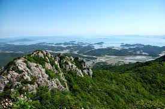

무등산
광주 북구 금곡동
국립공원 관리공단
062-227-1187 (관리사무소)
지리산
경남 함양군 마천면 추성리
국립공원 관리공단
055-970-1000 (관리사무소)

속리산
충북 보은군 속리산면 법주사로 84
국립공원 관리공단
055-970-1000 (관리사무소)
바다

양양 하조대
강원 양양군 현북면 하광정리
국립해양 관리공단
033-672-5647 (관리사무소)

김녕해변
제주 제주시 구좌읍 김녕리
국립해양 관리공단
064-728-3988 (관리사무소)

안목해변
강원 강릉시 창해로14번길 20-1
국립해변 관리공단
번호정보 없음 (관리사무소)